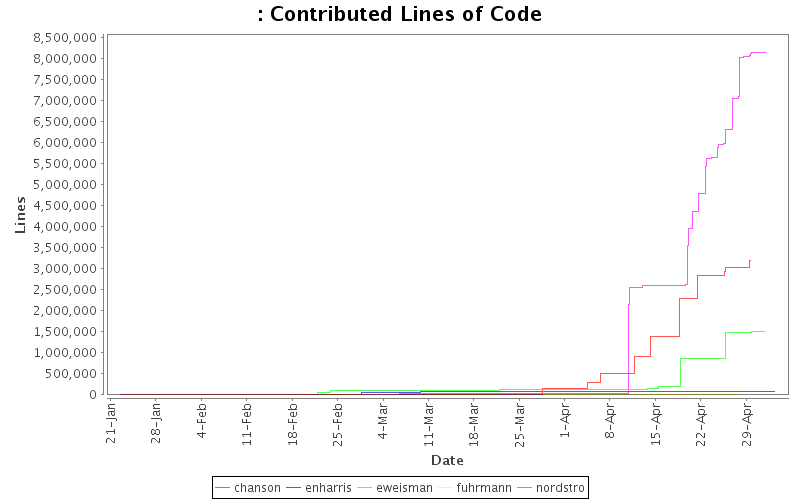
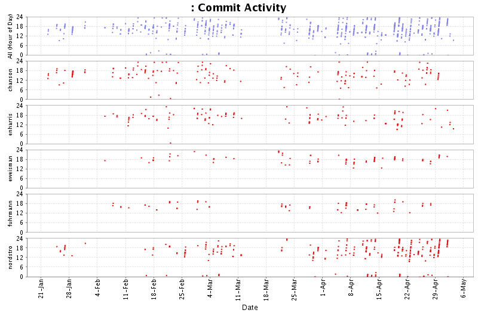
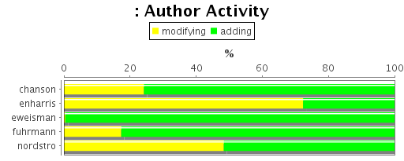
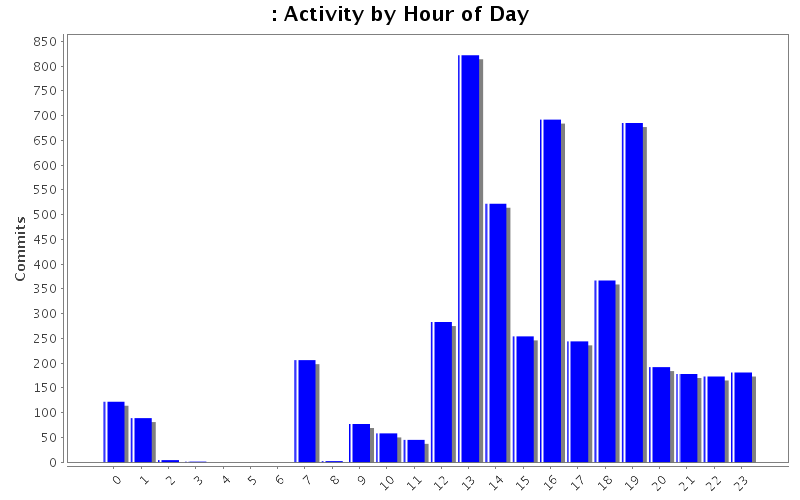
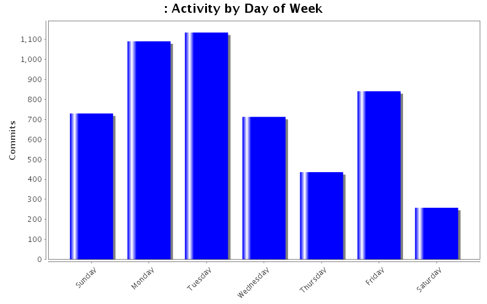

Developer of the Month
| Month | Author | Lines | Tweet This |
|---|---|---|---|
| May 2011 | nordstro | 15795 |  |
| April 2011 | nordstro | 8112806 | |
| March 2011 | chanson | 142829 | |
| February 2011 | eweisman | 91585 | |
| January 2011 | chanson | 7353 | |
| Author | Author Id | Changes | Lines of Code | Lines per Change |
|---|---|---|---|---|
| Totals | 5179 (100.0%) | 12912760 (100.0%) | 2493.2 | |
| nordstro | nordstro | 2497 (48.2%) | 8147206 (63.1%) | 3262.7 |
| chanson | chanson | 1293 (25.0%) | 3191494 (24.7%) | 2468.2 |
| eweisman | eweisman | 450 (8.7%) | 1500726 (11.6%) | 3334.9 |
| enharris | enharris | 816 (15.8%) | 67568 (0.5%) | 82.8 |
| fuhrmann | fuhrmann | 123 (2.4%) | 5766 (0.0%) | 46.8 |
| Author | Up to 5/2010 | 6/2010 | 7/2010 | 8/2010 | 9/2010 | 10/2010 | 11/2010 | 12/2010 | 1/2011 | 2/2011 | 3/2011 | 4/2011 | 5/2011 |
|---|---|---|---|---|---|---|---|---|---|---|---|---|---|
| Totals | 0 (-) | 0 (-) | 0 (-) | 0 (-) | 0 (-) | 0 (-) | 0 (-) | 0 (-) | 7891 (100.0%) | 154703 (100.0%) | 203194 (100.0%) | 12531177 (100.0%) | 15795 (100.0%) |
| nordstro | 0 (-) | 0 (-) | 0 (-) | 0 (-) | 0 (-) | 0 (-) | 0 (-) | 0 (-) | 538 (6.8%) | 2710 (1.8%) | 15357 (7.6%) | 8112806 (64.7%) | 15795 (100.0%) |
| chanson | 0 (-) | 0 (-) | 0 (-) | 0 (-) | 0 (-) | 0 (-) | 0 (-) | 0 (-) | 7353 (93.2%) | 2576 (1.7%) | 142829 (70.3%) | 3038736 (24.2%) | 0 (0.0%) |
| eweisman | 0 (-) | 0 (-) | 0 (-) | 0 (-) | 0 (-) | 0 (-) | 0 (-) | 0 (-) | 0 (0.0%) | 91585 (59.2%) | 34921 (17.2%) | 1374220 (11.0%) | 0 (0.0%) |
| enharris | 0 (-) | 0 (-) | 0 (-) | 0 (-) | 0 (-) | 0 (-) | 0 (-) | 0 (-) | 0 (0.0%) | 57149 (36.9%) | 8562 (4.2%) | 1857 (0.0%) | 0 (0.0%) |
| fuhrmann | 0 (-) | 0 (-) | 0 (-) | 0 (-) | 0 (-) | 0 (-) | 0 (-) | 0 (-) | 0 (0.0%) | 683 (0.4%) | 1525 (0.8%) | 3558 (0.0%) | 0 (0.0%) |

| Month | Author | Lines | Tweet This |
|---|---|---|---|
| May 2011 | nordstro | 15795 | |
| April 2011 | nordstro | 8112806 | |
| March 2011 | chanson | 142829 | |
| February 2011 | eweisman | 91585 | |
| January 2011 | chanson | 7353 | |



